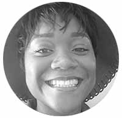

Somethings are better left unsaid?
We don’t believe so!
It is not always easy to translate our felt experiences or current experiences into words. We believe that Art Therapy & Meditation are the key to unlocking mental frustrations and challenges to find health, healing and happiness.
Art Therapy uses creative expression of images in photos and the physical freedom of making images as an alternative way of exploring and addressing emotional and psychological issues
Rebeka is the CEO of Artful and a curator of several exhibitions in the City and New York. She is passionate about creating unique experiences that improve mindfulness and created Artful in 2018. If you are looking to sponsor one of our events or would like to partner with us, she wants to hear from you.
Julia is our Chief Operations Officer. She has been involved in organising and supporting a range of private and public events for luxury brands and leading companies. She loves meeting new people, so when you get the chance grab her for a chat, she will tell you all about Artful.

Marie Dalle is our creative director. She graduated from the Royal College of Art in London, and worked in marketing prior to launching Artful.